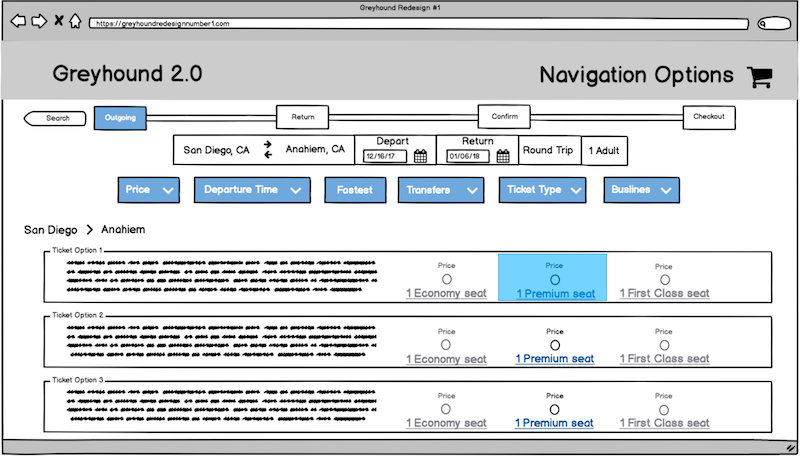

WEBSITE REDESIGN
case study
GOAL
Evaluate a major travel site and then redesign an important component that could be designed better.
PROJECT - make 2 distinct redesigns of the search and filtering process on Greyhound's website, then perform user tests to analyze strengths and weaknesses of each
DATE - nov 2017 - dec 2017
MY ROLE - UX/UI Designer
SKILLS - UX design, interviewing, user test planning, mockups, usability testing
TOOLS - balsamiq, InVision
TEAM - team of 4
Read full report, here. (Warning: it's lengthy!)
DESIGN PROCESS
Research
My teammates and I chose to evaluate Greyhound’s website. Each of us first began by using the website ourselves to become familiar with it and to identify where we thought errors might occur. Based on this, we believed the search and filter functions had the most potential for usability fixes.
To get a better understanding of user pain points, we interviewed three people with different levels of experience with using bus or train travel services. We sought for an inexperienced user, an average user, and an experienced user. We defined an inexperienced user as someone who has never used Greyhound or does not often use travel sites. An average user was defined as a person who may have used Greyhound before, but does use other travel sites. Lastly, an experienced user was defined as a person who uses Greyhound or travel sites often.
We created a user test plan and had each interviewee perform a task on Greyhound. When they were done, they listed the pros and cons of their experience. All users had significantly more cons. We recorded the process in order to analyze each user’s experience, then identified the top three usability problems for each participant.
Weaknesses
Based on user interviews, we honed in on what is weak in Greyhound’s website and identified 8 pain points.
Mockups of Redesigns
User Testing
Our team performed user tests on our redesigns. We created a test plan of our steps, tasks for our users, and follow up questions. The goal from this usability test was to determine which prototype had the better design and addressed the concerns and confusion that users had in the original Greyhound testing. We evaluated the better design based on the amount of errors a user made on one design versus the other. Furthermore, we considered the amount of hesitations, comments, questions asked, and visual appeal. Based on our criterion and analyses, we concluded that Prototype 1 was our better design.
BOTTOM LINE
Based on user tests on this redesign, our team's bottom line recommendation is to allow users the control and freedom of seeing the prices of what they are buying, or in this case, booking and also to provide users with a navigation tool so that progress and location can be tracked. Users want to see fees and the total of their current order before they have to put in their purchasing information. Our suggestion is to have an order summary similar to the one in our prototypes to give users immediate feedback. Users also need to know where they are within a website and the entire process, which can be shown through a progress bar and back/forward navigation buttons. Confirmation when completing actions is another important feature for good usability, therefore we suggest highlighting parts of the filter, as displayed in our redesign. Finally, as this is a travel site, one of the most important things is that filtering is made intuitive and aesthetic for users. Therefore, we suggest creating a single filtering system with all options clearly listed.

Evaluate a major travel site and then redesign an important component that could be designed better.
PROJECT - make 2 distinct redesigns of the search and filtering process on Greyhound's website, then perform user tests to analyze strengths and weaknesses of each
DATE - nov 2017 - dec 2017
MY ROLE - UX/UI Designer
SKILLS - UX design, interviewing, user test planning, mockups, usability testing
TOOLS - balsamiq, InVision
TEAM - team of 4
Read full report, here. (Warning: it's lengthy!)
DESIGN PROCESS
Research
My teammates and I chose to evaluate Greyhound’s website. Each of us first began by using the website ourselves to become familiar with it and to identify where we thought errors might occur. Based on this, we believed the search and filter functions had the most potential for usability fixes.
To get a better understanding of user pain points, we interviewed three people with different levels of experience with using bus or train travel services. We sought for an inexperienced user, an average user, and an experienced user. We defined an inexperienced user as someone who has never used Greyhound or does not often use travel sites. An average user was defined as a person who may have used Greyhound before, but does use other travel sites. Lastly, an experienced user was defined as a person who uses Greyhound or travel sites often.
We created a user test plan and had each interviewee perform a task on Greyhound. When they were done, they listed the pros and cons of their experience. All users had significantly more cons. We recorded the process in order to analyze each user’s experience, then identified the top three usability problems for each participant.
-
Mai Do
- No feedback after filtering
- Having three different filters is too confusing
- Cannot edit first part of trip without starting all over
Jimmy Bui - Cannot easily find out what “Economy/Economy Plus/Flexible” are and what they include
- Cannot edit first part of trip after selecting it without starting all over
- Having three different filters is too confusing
Aaron Spanner - Can’t edit the first leg of a trip without having to re-edit the second leg of the trip
- Can’t add a 2nd checked bag to get a quote on the whole trip before putting in credit card info
- Not enough details on differences between “Economy,” “Economy Extra” and “Flexible”
Weaknesses
Based on user interviews, we honed in on what is weak in Greyhound’s website and identified 8 pain points.
Mockups of Redesigns
Redesign 1: https://invis.io/WQEZ03RS6
Redesign 2: https://invis.io/GUEWIF2N8
User Testing
Our team performed user tests on our redesigns. We created a test plan of our steps, tasks for our users, and follow up questions. The goal from this usability test was to determine which prototype had the better design and addressed the concerns and confusion that users had in the original Greyhound testing. We evaluated the better design based on the amount of errors a user made on one design versus the other. Furthermore, we considered the amount of hesitations, comments, questions asked, and visual appeal. Based on our criterion and analyses, we concluded that Prototype 1 was our better design.
BOTTOM LINE
Based on user tests on this redesign, our team's bottom line recommendation is to allow users the control and freedom of seeing the prices of what they are buying, or in this case, booking and also to provide users with a navigation tool so that progress and location can be tracked. Users want to see fees and the total of their current order before they have to put in their purchasing information. Our suggestion is to have an order summary similar to the one in our prototypes to give users immediate feedback. Users also need to know where they are within a website and the entire process, which can be shown through a progress bar and back/forward navigation buttons. Confirmation when completing actions is another important feature for good usability, therefore we suggest highlighting parts of the filter, as displayed in our redesign. Finally, as this is a travel site, one of the most important things is that filtering is made intuitive and aesthetic for users. Therefore, we suggest creating a single filtering system with all options clearly listed.